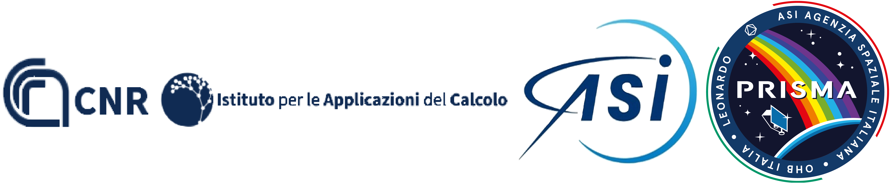
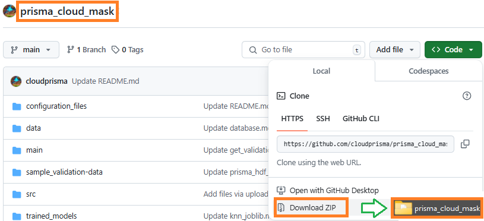
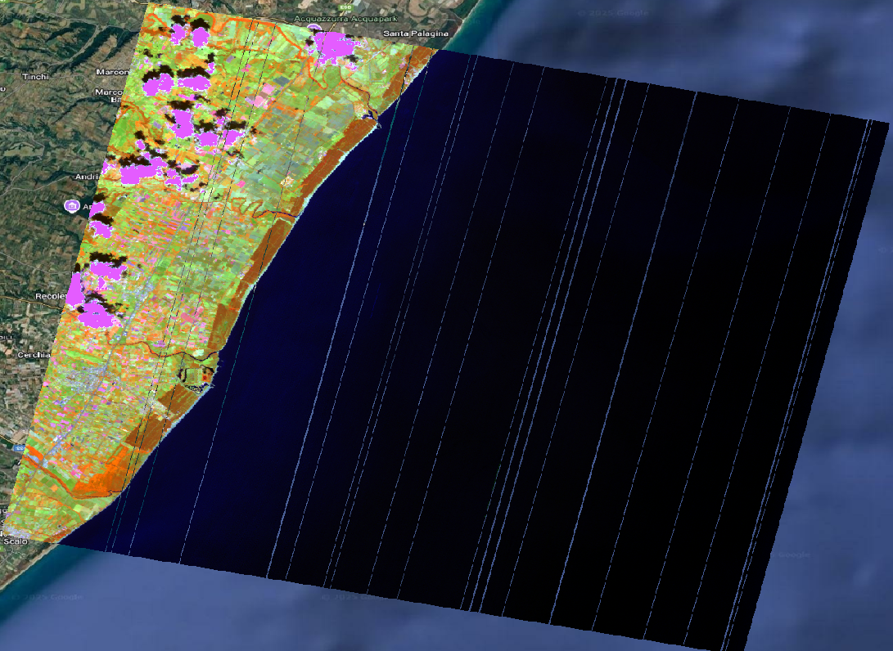

[comment]: # (This is a CommonMark compliant comment. It will not be included in the presentation.) [comment]: # (Compile this presentation with the command below) [comment]: # (mdslides presentation.md --include media) [comment]: # (Set the theme:) [comment]: # (The list of themes is at https://revealjs.com/themes/) [comment]: # (The list of code themes is at https://highlightjs.org/) [comment]: # "You can also use quotes instead of parenthesis" [comment]: # 'Single quotes work too' [comment]: # (Pass optional settings to reveal.js:) [comment]: # (markdown: { smartypants: true }) [comment]: # (Other settings are documented at https://revealjs.com/config/) ### SAPP4VU: Cloud Mask ---------- Implementazione di algoritmi numerico-statistici per la caratterizzazione e rimozione del rumore e per la cloud detection in immagini iperspettrali. <center><p></p></center> March 13, 2025
### Prisma cloud mask - [GIT](https://github.com/cloudprisma/prisma_cloud_mask/edit/main/README.md) ---------- ### Description: <div style="font-size: 1em;"> This repository contains the Python sources of the Prisma basic processing for cloud classification. Some parts for the preprocessing were adapted from the original code developed by [[1]](Vanhellemonthttps://www.sciencedirect.com/science/article/pii/S0034425718303481) - see the [ACOLITE: generic atmospheric correction module - for PRISMA](https://github.com/acolite/acolite) </div>
## Prepare environment ---------- -Example based on linux systems-
1. Create an environment, for instance: ``` $ pip install virtualenv $ python -m venv <virtual-environment-name> ``` or if necessary: ``` $ pip3 install virtualenv $ python3 -m venv <virtual-environment-name> ```
2. Activate your virtual environment: ``` $ source <virtual-environment-name>/bin/activate ```
3. Install the requirements in the Virtual Environment, you can easily just pip install the libraries. For example: ``` $ pip install numpy ``` or If you use the requirements.txt file: ``` $ pip install -r requirements.txt ```
## Download project ---------- -Resources-
4. Download the scripts available here and save them into the same directory or try via git clone source: ``` $ git clone https://github.com/cloudprisma/prisma_cloud_mask ```
<center><p></p></center> <div style="font-size: 1em;"> Alternative you can download the <a href="https://github.com/cloudprisma/prisma_cloud_mask/archive/refs/heads/main.zip">zip</a>. Please make sure to rename the directory as: <strong>prisma_cloud_mask</strong> after unzip the files. </div>
<div style="font-size: 1em;"> Given its weight, some files are attached as google drive link. Do not forget to download them: </div>
- [Database](https://github.com/cloudprisma/prisma_cloud_mask/blob/main/data/database.md) - [sample_validation_data/gpkg/](https://github.com/cloudprisma/prisma_cloud_mask/blob/main/sample_validation-data/gpkg/gpkg_files.md) folder - [sample_validation_data/hdf/](https://github.com/cloudprisma/prisma_cloud_mask/blob/main/sample_validation-data/hdf/prisma_hdf_files.md) folder - [trained_models/knn.joblib](https://github.com/cloudprisma/prisma_cloud_mask/blob/main/trained_models/knn_joblib.md)
## Run the scripts ---------- -To get the Cloud Mask-
Step 1: ---------- - Configure the [config_getclassification.json](https://github.com/cloudprisma/prisma_cloud_mask/blob/main/configuration_files/config_getclassification.json) file according to the instructions given in this [link](https://github.com/cloudprisma/prisma_cloud_mask/tree/main/configuration_files#config_getclassificationjson).
#### config_getclassification.json ---------- <div style="font-size: 1em;"> This is an example for the configuration file used to classify a new image. It is called by the <strong>get_classification.py</strong> main script. The structure for this file is described below: </div> ```json { "img_folder": "../hdf/", "trained_models_folder": "../trained_models/", "output_mask_folder": "../results/", "model": "xgboost", "stack_tif": true, "cloud_prisma": true, "npy_matrix": false, } ```
#### Mandatory parameters: ---------- <div style="font-size: 1em;"> - **img_folder**: path to the images to classify in hdf5 format. - **trained_models_folder**: path to the trained model in joblib format - **output_mask_folder**: path to the output directory - **model**: model to be used, options are: knn, rf (Random Forest) or xgboost </div>
#### Optional parameters: ---------- <div style="font-size: 1em;"> - **stack_tif**: boolean parameter. If true, the original bands are going to be stacked to the output mask. - **cloud_prisma**: boolean parameter. If true, the original prisma cloud mask is going to be stacked to the output mask. - **npy_matrix**: boolean parameter. If true, a numpy array is also generated in the output folder. </div>
Step 2: ---------- - Locate at the directory called: **main** inside of **prisma_cloud_mask** folder. Once there, execute the next command in a terminal, for example, to run the classification script ([get_classification.py](https://github.com/cloudprisma/prisma_cloud_mask/blob/main/main/get_classification.py)), you can run the following line: ``` $ python get_classification.py -i <Path to the config_getclassification.json file> ```
### Sample Results - Result based on: <strong>PRS_L1_STD_OFFL_20240522095507_20240522095511_0001 - Xgboost </strong> <center><p></p></center>